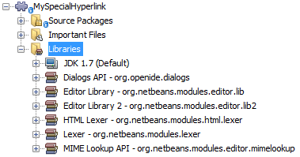

Apache NetBeans
Apache NetBeansLatest release
NetBeans Hyperlink Navigation Tutorial
| This tutorial needs a review. You can edit it in GitHub following these contribution guidelines. |
In this tutorial, you learn how to programmatically define hyperlinks in HTML files. You will do this by implementing the NetBeans API HyperlinkProvider class. The hyperlink will be visible when the user holds down the Ctrl key and then uses the mouse to move over a predefined identifier in an HTML document, as shown here:
When the hyperlink is clicked, something happens relevant to the identifier, for example, a related file can open or a message can be displayed.
Though the focus of this tutorial is on hyperlinking in an HTML file, the principles shown here could equally be applied to other types of files, such as to Java source files, XML files, JSP files, Properties files, or Manifest files.
Getting Started
In this section, we use a wizard to create a module project. We declare dependencies on modules that provide the NetBeans API classes needed by our hyperlink module.
-
Choose File > New Project. In the New Project wizard, choose NetBeans Modules under Categories and Module under Projects. Click Next.
-
Type
MySpecialHyperlinkin Project Name and set Project Location to an appropriate folder on your disk. Click Next.
-
Type
org.netbeans.modules.myspecialhyperlinkin Code Name Base. Click Finish.
1. In the Projects window, expand the project, right-click the Libraries node, and click Add Module Dependency. Add dependencies on the following APIs:
-
Dialogs API
-
Editor Library
-
Editor Library 2
-
HTML Lexer
-
Lexer
-
MIME Lookup API
You should now see the following:

Implementing the HyperlinkProvider Class
The HyperlinkProvider class implements three methods, each of which is discussed in detail below, accompanied by a practical example in the context of our module.
An alternative approach, which lets you define a tooltip on your hyperlink, is provided by the HyperlinkProviderExt class, which is discussed here and here.
Below, we first we set up the class and then we implement each of the three methods in turn.
Setting Up the HyperlinkProvider Class
Setting up our class means implementing HyperlinkProvider and initializing the values we will need in our implementation.
-
Create a Java class in
org.netbeans.modules.myspecialhyperlink, and name itMySpecialHyperlinkProvider.
-
Change the class signature so that
org.netbeans.lib.editor.hyperlink.spi.HyperlinkProvideris implemented.
-
Note that the following import statements will be needed in this tutorial:
import java.util.regex.Matcher;
import java.util.regex.Pattern;
import javax.swing.text.Document;
import org.netbeans.api.editor.mimelookup.MimeRegistration;
import org.netbeans.api.html.lexer.HTMLTokenId;
import org.netbeans.api.lexer.Token;
import org.netbeans.api.lexer.TokenHierarchy;
import org.netbeans.api.lexer.TokenSequence;
import org.netbeans.lib.editor.hyperlink.spi.HyperlinkProvider;
import org.openide.DialogDisplayer;
import org.openide.NotifyDescriptor;-
Add the following initial values at the top of the class:
public static final Pattern MY_SPECIAL_PATTERN =
Pattern.compile(".*\\[myspecial:(.*?):myspecial\\].*");
private String target;
private int targetStart;
private int targetEnd;isHyperlinkPoint(Document doc, int offset)
``isHyperlinkPoint(Document doc, int offset)`` determines whether there should be a hyperlink at the given offset within the given document.
@Override
public boolean isHyperlinkPoint(Document doc, int offset) {
return verifyState(doc, offset);
}
public boolean verifyState(Document doc, int offset) {
TokenHierarchy hi = TokenHierarchy.get(doc);
TokenSequence<HTMLTokenId> ts = hi.tokenSequence(HTMLTokenId.language());
if (ts != null) {
ts.move(offset);
ts.moveNext();
Token<HTMLTokenId> tok = ts.token();
int newOffset = ts.offset();
String matcherText = tok.text().toString();
Matcher m = MY_SPECIAL_PATTERN.matcher(matcherText);
if (m.matches()) {
target = m.group(1);
int idx = matcherText.indexOf(target);
targetStart = newOffset + idx;
targetEnd = targetStart + target.length();
return true;
}
}
return false;
}getHyperlinkSpan(Document doc, int offset)
``getHyperlinkSpan(Document doc, int offset)`` determines the length of the hyperlink.
@Override
public int[] getHyperlinkSpan(Document document, int offset) {
if (verifyState(document, offset)) {
return new int[]{targetStart, targetEnd};
} else {
return null;
}
}performClickAction(Document doc, int offset)
``performClickAction(Document doc, int offset)`` determines what happens when the hyperlink is clicked. In general, a document should open, the cursor should move to a certain place in a document, or both. Here a simple message is displayed with the identified special content:
@Override
public void performClickAction(Document document, int offset) {
if (verifyState(document, offset)) {
NotifyDescriptor.Message msg = new NotifyDescriptor.Message(target);
DialogDisplayer.getDefault().notify(msg);
}
}Registering the HyperlinkProvider Implementation Class
Finally, you need to register the hyperlink provider implementation class. Do this via the class-level annotation shown in the highlighted line in the completed Java source below:
package org.netbeans.modules.myspecialhyperlink;
import java.util.regex.Matcher;
import java.util.regex.Pattern;
import javax.swing.text.Document;
import org.netbeans.api.editor.mimelookup.MimeRegistration;
import org.netbeans.api.html.lexer.HTMLTokenId;
import org.netbeans.api.lexer.Token;
import org.netbeans.api.lexer.TokenHierarchy;
import org.netbeans.api.lexer.TokenSequence;
import org.netbeans.lib.editor.hyperlink.spi.HyperlinkProvider;
import org.openide.DialogDisplayer;
import org.openide.NotifyDescriptor;
*@MimeRegistration(mimeType = "text/html", service = HyperlinkProvider.class)*
public class MySpecialHyperlinkProvider implements HyperlinkProvider {
public static final Pattern MY_SPECIAL_PATTERN =
Pattern.compile(".*\\[myspecial:(.*?):myspecial\\].*");
private String target;
private int targetStart;
private int targetEnd;
@Override
public boolean isHyperlinkPoint(Document doc, int offset) {
return verifyState(doc, offset);
}
public boolean verifyState(Document doc, int offset) {
TokenHierarchy hi = TokenHierarchy.get(doc);
TokenSequence<HTMLTokenId> ts = hi.tokenSequence(HTMLTokenId.language());
if (ts != null) {
ts.move(offset);
ts.moveNext();
Token<HTMLTokenId> tok = ts.token();
int newOffset = ts.offset();
String matcherText = tok.text().toString();
Matcher m = MY_SPECIAL_PATTERN.matcher(matcherText);
if (m.matches()) {
target = m.group(1);
int idx = matcherText.indexOf(target);
targetStart = newOffset + idx;
targetEnd = targetStart + target.length();
return true;
}
}
return false;
}
@Override
public int[] getHyperlinkSpan(Document document, int offset) {
if (verifyState(document, offset)) {
return new int[]{targetStart, targetEnd};
} else {
return null;
}
}
@Override
public void performClickAction(Document document, int offset) {
if (verifyState(document, offset)) {
NotifyDescriptor.Message msg = new NotifyDescriptor.Message(target);
DialogDisplayer.getDefault().notify(msg);
}
}
}If you create a hyperlink for a different MIME type, you need to change the text/html folder in the annotation above to the appropriate MIME type. Read Hyperlink in a Plain Text File to learn about a different implementation of the above class.
Now that the HyperlinkProvider is registered, you can run the module and try out your new hyperlinks, with this result: